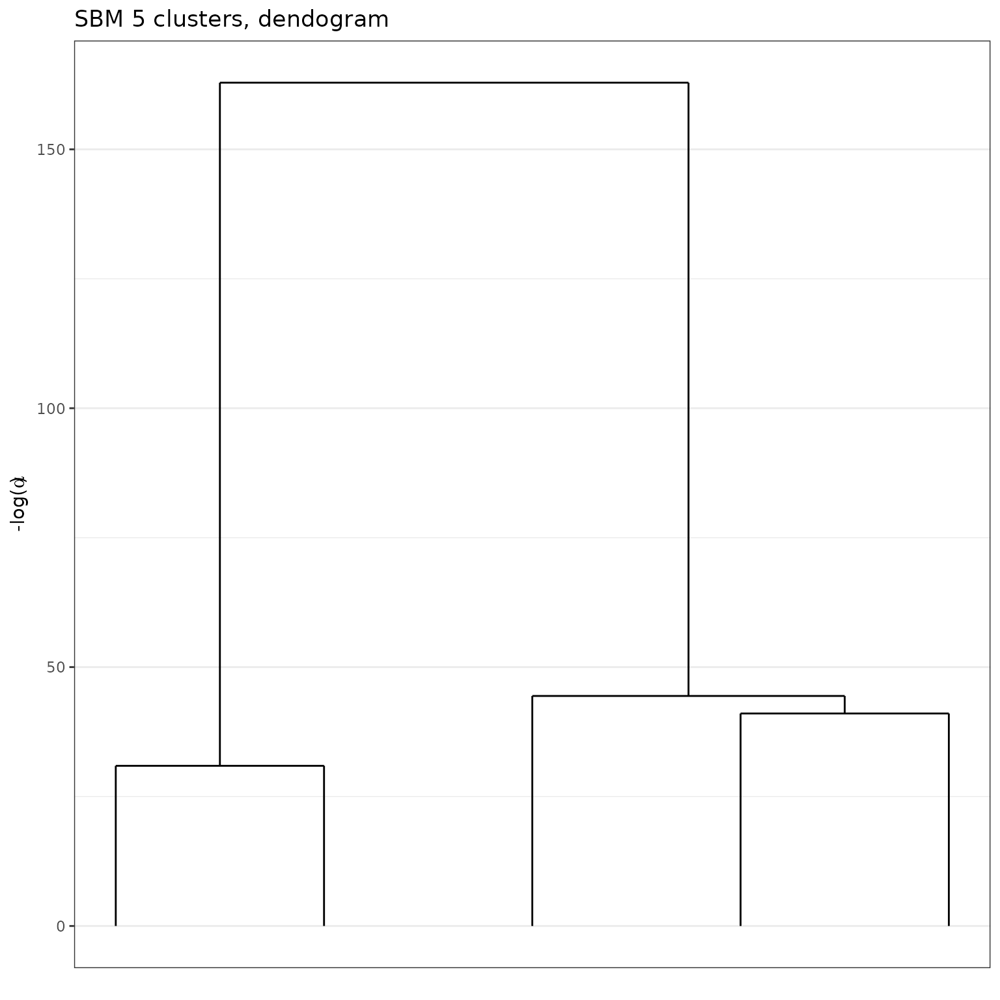
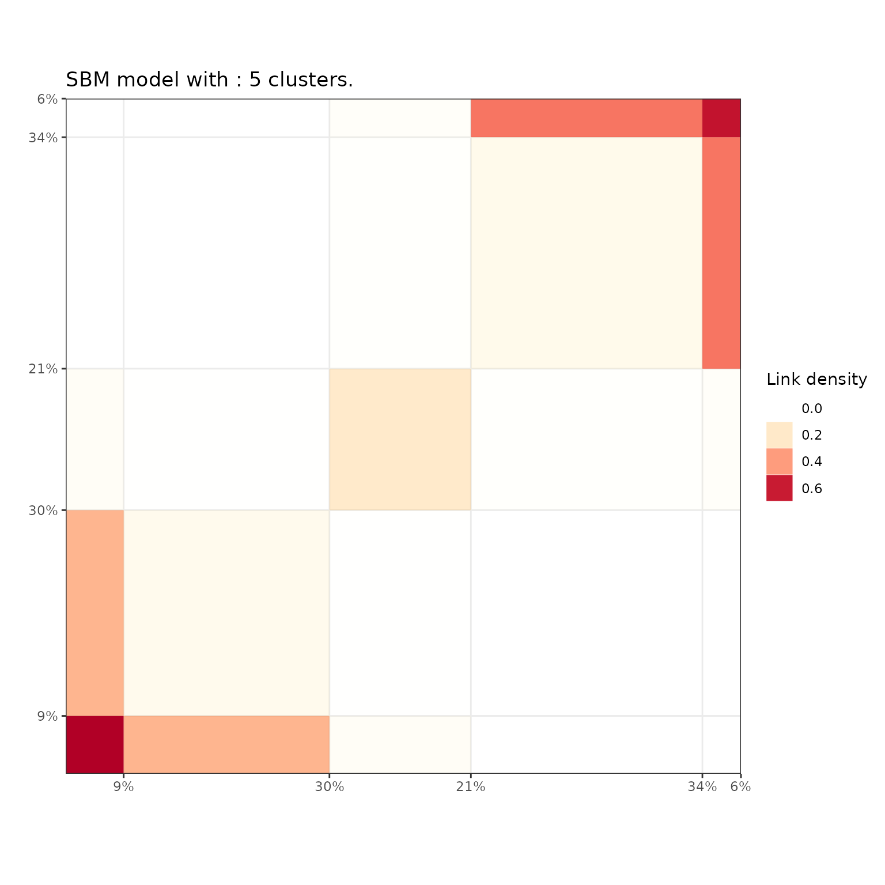

Greed enables model-based clustering of networks, matrices of count data and much more with different types of generative models. Model-selection and clustering are performed in combination by optimizing the Integrated Classification Likelihood. Details of the algorithms and methods proposed by this package can be found in Côme, Jouvin, Latouche, and Bouveyron (2021) 10.1007/s11634-021-00440-z.
Dedicated to clustering and visualization, the package is very general and currently handles the following tasks:
Gmm and DiagGmm S4 classes.Sbm and dcSbm S4 classes.Lca S4 class.Mom S4 class.CombinedModels S4 class.MoR S4 class.DcLbm S4 class.With the Integrated Classification Likelihood, the parameters of the models are integrated out with a natural regularization effect for complex models. This penalization allows to automatically find a suitable value for the number of clusters \(K^\star\). A user only needs to provide an initial guess for the number of clusters \(K\), as well as values for the prior parameters (reasonable default values are used if no prior information is given). The default optimization is performed thanks to a combination of a greedy local search and a genetic algorithm described in Côme, Jouvin, Latouche, and Bouveyron (2021), but several other optimization algorithms are also available.
Eventually, a whole hierarchy of solutions from \(K^\star\) to 1 cluster is extracted. This enables an ordering of the clusters, and the exploration of simpler clustering along the hierarchy. The package also provides some plotting functionality.
The main entry point for using the package is simply
thegreed function (see ?greed). The generative
model will be chosen automatically to fit the type of the provided data,
but you may specify another choice with the model
argument.
We illustrate its use on a graph clustering example
with the classical Books network ?Books.
More use cases and their specific plotting functionality are described in the vignettes.
library(greed)
data(Books)
sol <- greed(Books$X)
#>
#> ── Fitting a guess DCSBM model ──
#>
#> ℹ Initializing a population of 20 solutions.
#> ℹ Generation 1 : best solution with an ICL of -1348 and 5 clusters.
#> ℹ Generation 2 : best solution with an ICL of -1346 and 5 clusters.
#> ℹ Generation 3 : best solution with an ICL of -1346 and 5 clusters.
#> ℹ Generation 4 : best solution with an ICL of -1346 and 5 clusters.
#> ── Final clustering ──
#>
#> ── Clustering with a DCSBM model 4 clusters and an ICL of -1342You may specify the model you want to use and set the priors
parameters with the (model argument), the optimization
algorithm (alg argument) and the initial number of cluster
K. Here Books$X is a square sparse matrix and
a graph clustering ?`DcSbm-class` model will be used by
default. By default, the Hybrid genetic algorithm is used.
The next example illustrates a usage without default values. A binary
Sbm prior is used, along with a spectral clustering
algorithm for graphs.
The results of greed() is an S4 class which depends on
the model argument (here, an SBM) which comes with readily
implemented methods: clustering() to access the estimated
partitions, K() the estimated number of clusters, and
coef() the (conditional) maximum a posteriori of the model
parameters.
knitr::kable(table(Books$label,clustering(sol)))| 1 | 2 | 3 | 4 | 5 | |
|---|---|---|---|---|---|
| c | 0 | 1 | 8 | 34 | 6 |
| l | 9 | 29 | 5 | 0 | 0 |
| n | 0 | 2 | 9 | 2 | 0 |
K(sol)
#> [1] 5
coef(sol)
#> $pi
#> [1] 0.08571429 0.30476190 0.20952381 0.34285714 0.05714286
#>
#> $thetakl
#> [,1] [,2] [,3] [,4] [,5]
#> [1,] 0.72222222 0.357638889 0.055555556 0.000000000 0.00000000
#> [2,] 0.35763889 0.094758065 0.008522727 0.002604167 0.00000000
#> [3,] 0.05555556 0.008522727 0.203463203 0.022727273 0.03787879
#> [4,] 0.00000000 0.002604167 0.022727273 0.101587302 0.46296296
#> [5,] 0.00000000 0.000000000 0.037878788 0.462962963 0.73333333An important aspect of the greed package is its
hierarchical clustering algorithm which extract a set of nested
partitions from K=K(sol) to K=1. This
hierarchy may be visualized thanks to a dendogram representing the
fusion order and the level of regularization \(- \log(\alpha)\) needed for each
fusion.
plot(sol, type='tree') # try also: type="path"
Moreover, similar to standard hierarchical algorithm such as
hclust, the cut() method allows you to extract
a partition at any stage of the hierarchy. Its results is still an S4
object, and the S4 methods introduced earlier may again be used to
investigate the results.
sol_K3 = cut(sol, K=3)
K(sol_K3)
#> [1] 3
knitr::kable(table(Books$label,clustering(sol_K3)))| 1 | 2 | 3 | |
|---|---|---|---|
| c | 1 | 8 | 40 |
| l | 38 | 5 | 0 |
| n | 2 | 9 | 2 |
Finally, the greed package propose efficient and
model-adapted visualization via the plot() methods. In this
graph clustering example, the "blocks" and
"nodelink" display the cluster-aggregated adjacency matrix
and diagram of the graph respectively. Note that the ordering of the
clusters is the same than the one computed for the dendrogram, greatly
enhancing visualization of the hierarchical structure.

As explained above, the greed package implements many standard models and the list may be displayed with
Many plotting functions are available and, depending of the specified
model, different type argument may be
specified. For further information we refer to the vignettes linked
above for each use case.